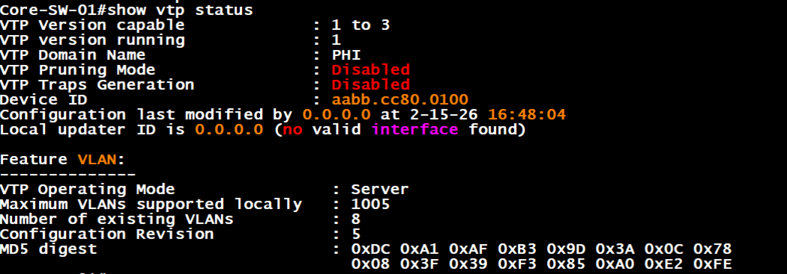
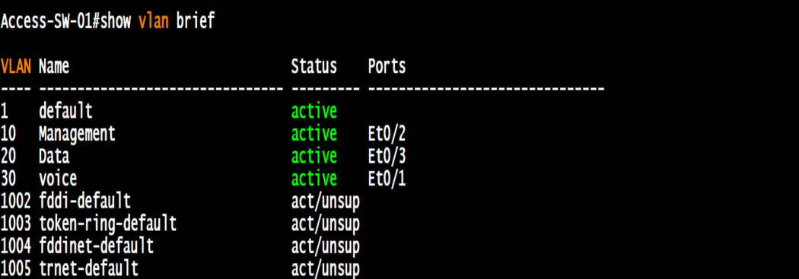
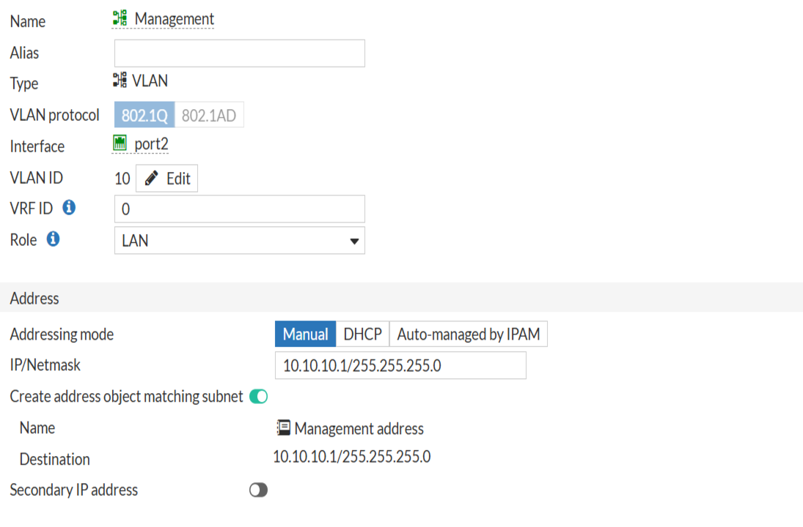
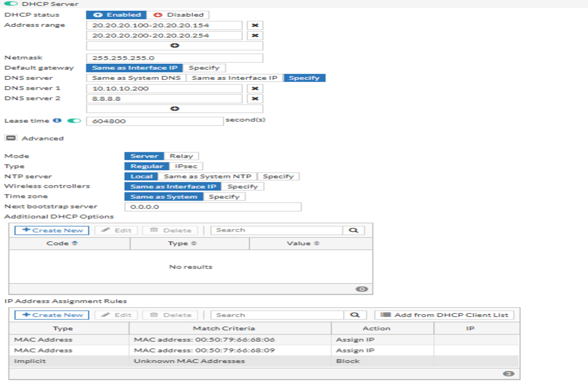
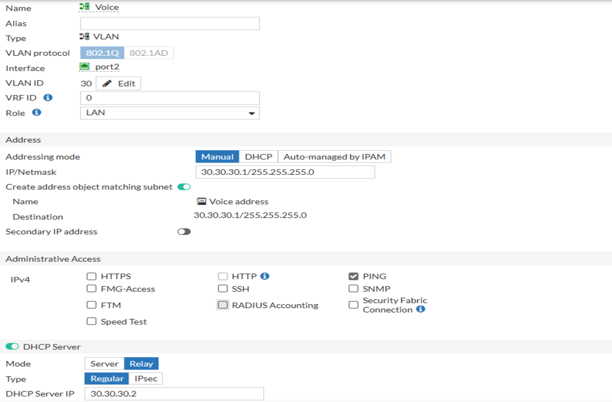
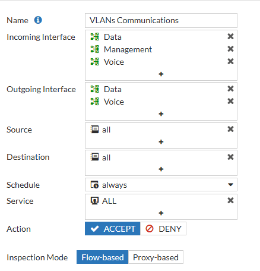
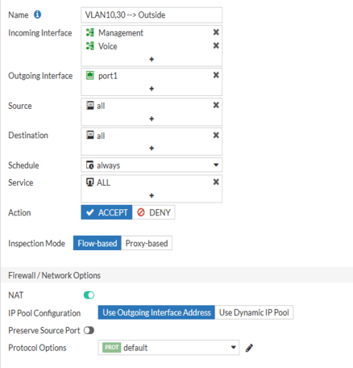
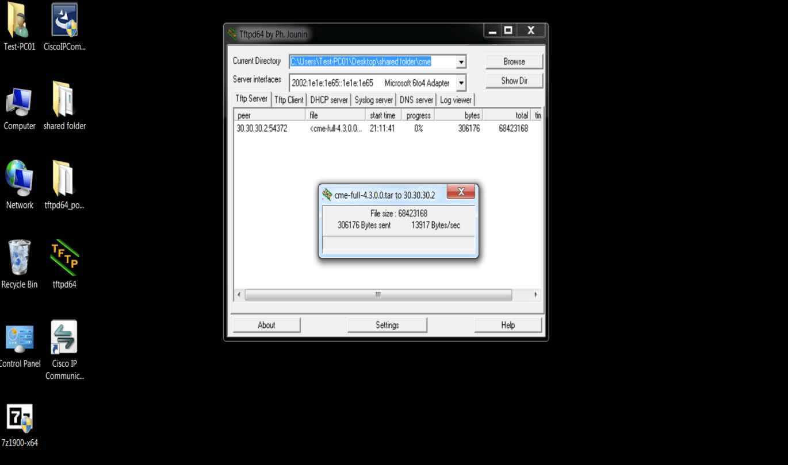
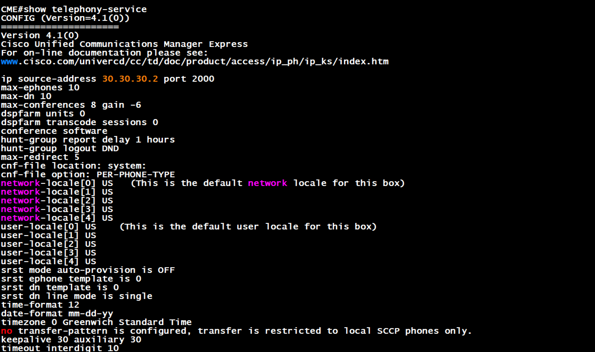
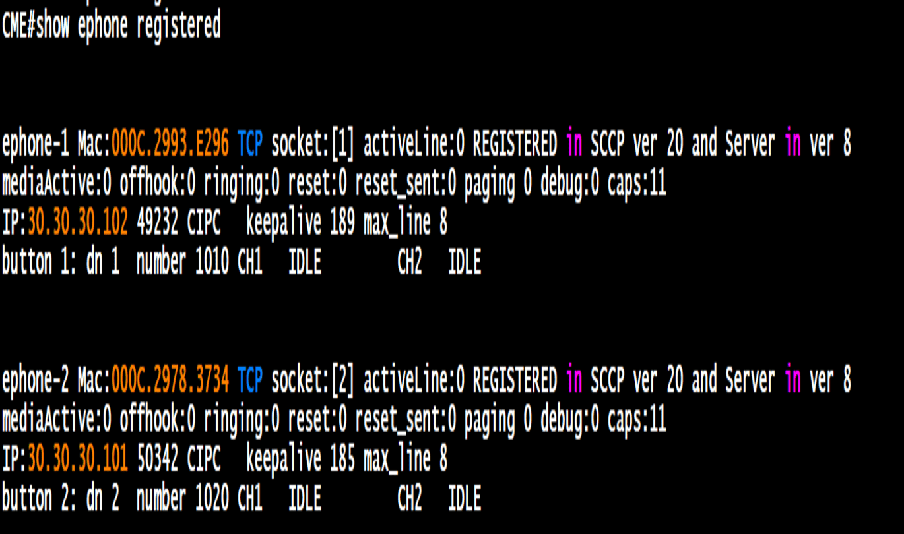

Project Overview
This project demonstrates how to configure three VLANs (Management, Data, Voice) across core and access switches, with FortiGate as the gateway and DHCP server. Cisco 3725 router runs CME for VoIP phones, while Active Directory provides authentication for Data VLAN clients.
Key Features
- VTP deployment with core switch as server and access switches as clients.
- FortiGate VLAN interfaces as gateways with DHCP per VLAN.
- MAC whitelisting to block unauthorized devices.
- CME integration with Voice VLAN and DHCP option 150.
- Firewall policies restricting VLAN 10 access while enabling Internet for VLAN 30.
Implementation Schedule
- Step 1: Configure VLANs on core switch (VTP server).
- Step 2: Set access switches as VTP clients and assign ports.
- Step 3: Create VLAN interfaces on FortiGate with DHCP scopes.
- Step 4: Apply MAC whitelisting for authorized devices.
- Step 5: Upload CME files via TFTP and configure telephony-service on Cisco 3725.
- Step 6: Configure CME with Voice VLAN and DHCP option 150.
- Step 7: Apply firewall policies (restrict VLAN 10, allow Internet for VLAN 30).
- Step 8: Verify connectivity and document results.
Switch Configurations


FortiGate VLAN Interfaces



Firewall Policies


CME Router (Cisco 3725) Setup
The CME server is a Cisco 3725 router. CME files were uploaded via TFTP from a local PC, extracted into flash, and configured with telephony-service.
- Step 1: Upload CME files via TFTP to router flash.
- Step 2: Extract GUI and phone load files using
archive tar /xtract.
- Step 3: Configure
telephony-service with max ephones, max-dn, and source-address.
- Step 4: Add phone loads and create CNF files.
- Step 5: Define ephone-dn and ephone bindings for extensions and MAC addresses.
- Step 6: Verify registration with
show ephone registered.


